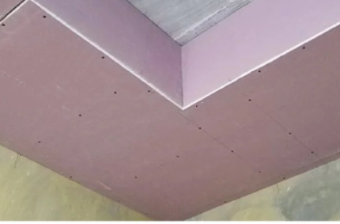
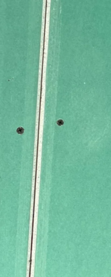
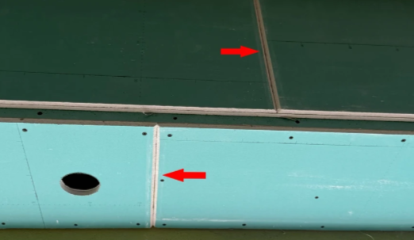
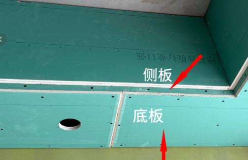
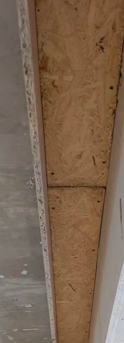

装修全流程 16 节点 知识库 · 完整版
收房验房
建议工期 1~3 天- 验房工具：空鼓锤、感应电笔、卷尺、塞尺、垂直检测尺
- 毛坯房检查：墙面开裂/空鼓、地面平整、门窗密封、水电通断
- 精装房额外：材料品牌核对、地砖空鼓率、漆面色差
- 发现问题处理：拍照留证 → 书面记录 → 联系物业/开发商整改
确定预算
建议工期 3~7 天- 预算黄金比例：硬装40% + 主材30% + 家具家电20% + 预留10%
- 常见预算陷阱：低价全包后期增项、漏报必做项目、以次充好
- 签合同：固定总价、增项上限不超5%、所有材料写进合同
- 分清“定金”与“订金”，避免退款困难
设计定稿
建议工期 7~15 天- 与设计师沟通：带户型图、明确生活习惯和需求
- 风格选择：现代简约/北欧/中式/日式/轻奢各自特点
- 关键决策：承重墙不能动、水电点位提前、插座宁多勿少
- 确认清单：平面布局、水电点位图、立面图、铺砖排版、砌墙尺寸、木工尺寸、灯具定位图、材料清单
拆改工程
建议工期 3~7 天- 1. 设计师、业主、师傅现场沟通，确保图纸无误；如有砌壁龛或特殊要求要沟通好，不能让师傅按经验发挥，避免拆错砌错导致返工。
- 2. 验收材料：检查现场材料是否和合同上一致，砖块是否完整，水泥也看一下有效期，确保粘力。
- 3. 开工前关闭水电气总阀；用专用堵盖或矿泉水瓶套塑料袋，封堵所有地漏和下水管口，防止碎渣堵塞主管道。
- 4. 对入户门、楼道、电梯和保留的门窗做好保护膜。
- 5. 施工依据：备好工种点位图、平面布局图。
- 1. 拆墙现场灰尘非常大，一般没办法现场盯着，只能提前让设计师和师傅沟通好，并现场盯着他们把下水管道堵好，避免拆除过程中水泥沙灰把下水口堵住。
- 2. 提前在业主群里问一下有哪些物品可以回收，虽然少，但也算回血一些。
- 哪些墙能拆、哪些不能动：承重墙、剪力墙、配重墙
- 拆改前必做：物业报备、邻居告知、成品保护
- 新建墙体：植筋、挂网、顶部斜砌
- 铲墙皮标准：原墙面空鼓/起皮必须铲到基层
砌墙粉刷工程
建议工期 3~5 天- 1. 开工准备：核对平面图纸，弹线定位，材料进场验收。
- 2. 施工要点：新墙错缝砌筑，墙体需做拉结筋；砌完墙体必须抹灰粉刷。
- 3. 验收指南：墙体垂直平整，抹灰无空鼓开裂，新旧墙体接缝做好防裂处理。
水电改造
建议工期 7~10 天

- 1. 插座点位宁多勿少，漏装一个，后期全是插排；后期返工更是费钱又麻烦。
- 2. 开工前，根据家中电器以及生活习惯，做好位置和数量的规划。
- 3. 改完务必仔细验收，核对点位；验收后拍照留底，后期维修才能精准定位。


- 1. 开关插座：按图纸核对点位，一个都不能少。
- 2. 墙面开槽：承重墙横槽小于 30cm，非承重墙小于 50cm，尽量开竖槽。
- 3. 强弱电交叉：必须包锡纸，防止信号干扰。
- 4. 灯位打弯：防止回缩。
- 5. 线盒保护盖：改完电后盖好，防止施工进灰。
- 6. 穿线管数量：2.5 平方线 ≤6 根，4 平方线 ≤3 根。
- 7. 电线规格：照明用 1.5 平方，普通插座、1-1.5P 挂机 2.5 平方，厨卫、3P 柜机各走独立 4 平方回路，中央空调一拖多按设备铭牌选配线缆，部分机型需 6-10 平方，各设备独立回路。
- 8. 电视墙：预埋 50 管（后期藏线美观）。
- 9. 空调管道：后期不想外露，就提前预埋铜管。
- 10. 强弱电：不共管、不共盒，分开走。
- 11. 强电箱：回路要标注清楚（空调、厨卫、监控、冰箱单独回路）。
- 12. 网线：每个房间预留超六类网线。
- 13. 排水管：厨房换 90° 排水管，存水弯容易藏污纳垢。
- 14. 冷热水管：间距保持 15cm（误差越小越好，记得看水平）。
- 15. 水管熔接：接口要呈现“双眼皮”状，才是合格熔接。
- 16. 排水管坡度：新铺管道必须有坡度，尤其阳台洗衣机位。
- 17. 打压测试：联系水管厂家上门，打压 30 分钟，一般 8～10 公斤即可，水管不漏才过关。
- 18. 拍照留底：全屋水电走向拍一遍，方便以后打孔、维修；厂家验收后一般会拍 VR 管路图，记得要一份。
- 19. 厨卫水管优先走顶不走地，漏水好排查维修，若必须走地，防水涂料严禁刷 PPR 水管表面，会渗入管内污染水质，管壁张力还会放大接头漏水风险。

- 定位原则：先想家具家电摆放，再定水电点位
- 电路规范：横平竖直、强弱电分离≥30cm、分色布线
- 水路规范：左热右冷、PPR管走顶、打压测试0.8~1.2MPa保压30分钟
- 验收必做：拍照/视频存档全屋水电走向，封槽前必须验收
防水施工
建议工期 3~5 天- 1. 拆改部分：卫生间砌墙需做 20cm 混凝土止水梁，防止潮气渗透导致墙面发霉（见第七部分避坑第二条）。
- 2. 瓷砖部分：卫生间门口瓷砖应比外面砖低1公分左右，防止水流到外面；地漏可按需做暗排，能够快速排走瓷砖层积水，解决沉箱内部积水问题，同时需检查地漏是否有断层，断层会导致返碱、发霉或恶臭。
- 防水范围：卫生间必做、厨房建议做、阳台建议做
- 施工标准：墙面返高30cm、淋浴区1.8m、涂刷横竖各一遍
- 闭水试验：蓄水48小时，到楼下检查是否渗漏
- 二次排水：沉箱式卫生间必须做二次排水口
瓦工铺贴
建议工期 7~15 天- 1. 规格：800×800 性价比好；追求高级感、无缝感选 750×1500；墙砖通常用 400×800 或 600×1200 即可。
- 2. 学会看参数：首先看是否是优等品；其次看吸水率：小于0.5，可以在瓷砖背面倒几滴水，5分钟不渗入，还要附录为G的；看生产日期：生产日期必须一样，同样的砖、不同批次难免会有色差；产地最好选择广东；砖上洒水、上脚感受，有涩感为佳；店里灯光会导致瓷砖有色差，一定要搬到太阳光下看看。
- 3. 阳角条：瓷砖阳角优先选择工厂预制海棠角（45°倒角），务必提前跟厂家确认，避免瓦工现场倒角后期额外加价；现场倒角的费用需要在工程报价中明确体现。
- 4. 合同前确认：免费服务：送货上楼、搬运到户、退货补货（购买的时候需要计算损耗，一般按照3%计算；单独厂家购买一定会有上门搬运费用，一般是按照层数计算，有电梯一般按照一层计算）；质量问题包换；明确交货时间（违约金、检测报告这两个基本没有）和发票。
- 1. 铺贴排版验收：一定提醒师傅按排版图铺贴！有些老师傅可能会凭自己的经验来铺，最后验收效果不一样。
- 2. 验收平整度：用硬币来回滑动十字交叉处，看看是否有凹凸不平，如果顺畅滑行就可以。
- 3. 验收空鼓：用空鼓锤敲一敲，空鼓率高的位置一定要重新处理。（地面砖不能有空鼓，否则地面容易开裂；墙面砖 5% 以内的空鼓率为合格，四周少量空鼓可以接受，中间有空鼓一定补救，否则后期容易脱落。）
- 4. 验收海棠角：检查是否有绷瓷。
- 5. 验收缝隙：普通填缝墙面留 1.5-2.0mm；如需做美缝，地面建议预留 2.5mm，墙面预留 2.0mm。
- 6. 坡度验收：地漏为卫生间的最低处，可以用弹珠进行测试。（小经验：显层高，竖贴墙砖；显宽阔，横贴墙砖。）
- 7. 出水口验收：洗手盆、淋浴区出水口要涂水不漏，或密封胶封闭，否则角阀安装不严，会出现渗水。
- 8. 开孔验收：检查开关、插座等方形位置是否有“小耳朵”，否则后期安装插座就会有缝隙；（提醒：切记看好是否该开孔的位置有开孔，别被盖住了不知道。）
- 9. 垂直度验收：用一块废砖或直尺检查，误差要小于 3mm，尤其浴室柜、橱柜安装的位置，否则会出现安装与墙面贴合不严、缝隙过大。
- 10. 水平度验收：使用水平尺，多选多处点位进行验收，偏差小于 3mm 即为合格。
- 11. 止逆阀验收：用整块砖开孔，并贴上止逆阀，避免后期脱落及密封性不好的风险。
- 12. 花砖验收：花砖一般有好几个版面，一定要提前排版。
- 13. 卫生间门口验收：防止卫生间水流到外面，卫生间瓷砖要比外面砖低 1 公分左右。
- 14. 地漏断层验收：切记检查地漏是否有断层，断层会导致返碱、发霉或者恶臭。
- 15. 墙地对缝：美观还显空间大；先地砖、再墙砖，墙压地进行铺贴。
- 16. 分辨好真假通铺，不要过门石。
- 17. 壁龛一定要做好坡度，避免日后积水。
- 18. 贴好水电标示贴，方便后续安装设备。
- 19. 下水管包好隔音棉+阻尼片，隔音效果好。
- 20. 清缝工作要及时处理，避免水泥凝固后难以清理。
- 21. 贴砖后记得铺好保护膜。
- 22. 贴砖前确认门套是单包套还是双包套；单包套无需先安门，重点检查瓷砖 45 度对角工艺。
- 23. 马桶下水管要高于地面 1cm。

- 瓷砖选购：吸水率、平整度、色差检查
- 铺贴工艺：薄贴法 vs 厚贴法、瓷砖胶等级选择
- 验收标准：空鼓率≤5%、平整度误差≤2mm、缝隙均匀
- 地面找平：为后续地板安装预留高度
木工吊顶
建议工期 5~10 天- 1. 拐角做 7 字型切割，不可以直接拼接，后续乳胶漆易开裂。
- 2. 石膏板拼接处开 V 型凹槽，后期批灰填满，防止开裂。
- 3. 石膏板选耐水石膏板，不易发霉。
- 4. 射灯开孔一般是直径 7.5 公分；双眼皮射灯离墙 15 公分；射灯间距可以按照选择的射灯光束角来确定。
- 5. 单轨窗帘盒一般 10 公分，双轨窗帘盒一般 20～25 公分，深度 15 公分。
- 6. 螺丝做防锈处理，避免后期返锈。
- 7. 龙骨可以使用轻钢龙骨，防潮性好、更稳定、不易变形。
- 8. 主龙骨间距 80～120 公分。
- 9. 衣柜上方建议吊顶，避免后期有缝隙。
- 10. 上下两层石膏板接缝必须错开，防止整条开裂。
- 11. 底板必须拖住侧板，结构更稳固。
- 12. 窗帘盒用欧松板打底，再封石膏板，不易开裂、变形。
- 13. 浴霸排风软管务必在吊顶封板前对接卫生间通风口，吊顶完工后内部操作空间狭小，师傅常会嫌麻烦不接，外表看不出问题，但换气只会空转，湿气排不出易造成卫生间发霉，建议可让吊顶师傅一并安装浴霸，或协调吊顶、浴霸两位师傅同步到场施工。





- 吊顶类型：平顶、造型顶、无主灯设计、双眼皮吊顶
- 龙骨间距规范、转角 L 型切割防开裂
- 石膏板接缝：V型槽 + 嵌缝石膏 + 绷带
- 板材选择：轻钢龙骨优于木龙骨、石膏板厚度≥9.5mm
油工刷漆
建议工期 7~12 天- 1. 开发商的墙面要铲到底，防止后期墙面空鼓掉皮。
- 2. 先刷墙固，才可以更好地让腻子附着。
- 3. 吊顶上的钉眼一定要刷防锈剂。
- 4. 用石膏填补线槽，补好后再挂网。
- 5. 没有必要做全屋挂网，电路开槽处、新旧墙体交界处挂网即可。
- 6. 腻子无需额外添加胶水，严禁私自添加胶水。
- 7. 阴阳角要挂阴阳角条。
- 8. 用底层石膏做第一次底层找平。
- 9. 腻子刮两遍，最好不要超过 3mm。
- 10. 一定要等第一遍腻子干了之后再刷第二遍，千万不要着急。
- 11. 腻子一定要刮到底，防止后期安装极窄踢脚线挡不住。
- 12. 打柜子的墙体要做垂平。
- 13. 刮完腻子不要开窗吹对流风，防止开裂。
- 14. 刷乳胶漆前小面积试刷，没问题再大面积进行。
- 墙面流程：基层→界面剂→挂网→腻子2~3遍→打磨→底漆→面漆2遍
- 乳胶漆选购：VOC含量、遮盖力、耐擦洗次数
- 墙面问题预防：开裂（挂网）、起皮（界面剂）、色差（一次备够）
- 验收技巧：强光手电照墙查平整、侧面看流坠
厨卫吊顶
建议工期 1~2 天- 材质选择：铝扣板（主流）vs 防水石膏板（颜值高但维护难）
- 配套同步安装：浴霸、排风扇、LED灯
- 安装高度：不低于2.3m、浴霸位置正对淋浴区外
- 预留检修口：方便日后维修管道
定制柜安装
建议工期 3~7 天- 1. 五金可以自己买吗？是否包安装？大部分商家的基础五金、功能五金都是包安装的。虽然可以自己网购进口五金，报价能减 30 元一投影，但真心不建议：后期容易出现扯皮，比如安装不合适、商家不负责售后，还有额外的安装费，反而更麻烦。（特殊需要自行购买，可以联系定制柜厂家沟通需要的数量，产品由定制柜厂家出明细。）
- 2. 报价里的五金，都包含哪些？像铰链、滑轨、气撑、反弹器、拉篮、拉直器、百宝盒、挂衣通这些，都要问清楚哪些是免费送的、哪些需要单独加钱。别等签了合同才发现，好多五金都要额外花钱，全是隐形增项。
- 3. 铰链和滑轨，能换品牌吗？国产五金优先选悍高、东泰，质量靠谱；进口的就选海蒂诗、百隆，质感更好。提前问商家能不能更换五金品牌，国产换进口要加多少钱，别等装完才知道只能用他们的标配款，想换都换不了。
- 4. 柜门表面材质，哪些需要加钱？一定要问清楚，商家报价里的柜门表面是什么材质，价格都是多少。一般来说，PET 肤感、PET 高光不用加钱；做法式线条、鱼骨线，大概要加 40 元/投影（颗粒板做不了，只有密度板能做，我们没有密度板产品）；模压吸塑也不用加钱；但做造型烤漆（也是密度板）就要加钱了，一般 100 元/投影，提前确认好。
- 5. 板材封边，选哪种才靠谱？现在做全屋定制，封边至少要选 PUR 封边，那种便宜的 EVA 封边不建议选，密封性不好，还容易翘边。如果预算充足，也可以选激光封边，颜值更高、更环保，就是价格贵一点。其实 PUR 封边，日常用已经完全够用了。（EVA 预热可逆，一撕就掉；PUR 几乎不可逆；激光是封边条和板材连接处连接美观，肉眼几乎看不出。）
- 6. 见光板，需要单独收费吗？见光板就是柜子侧面露在外面的那块板，为了美观，一定要加（柜体柜门通体同色板的可以不加），不然侧面露着光秃秃的特别丑。有些商家的报价里包含见光板，有些需要单独收费，提前问清楚。
- 7. 抽屉能送几个？额外加一个多少钱？其实抽屉的成本很低，签合同之前尽量跟商家谈，让他们全送，能省一笔是一笔。（抽屉和隔板不是越多越好：抽屉按需预留设计，隔板多了挂装区域变小，会多叠装区域。）
- 8. 加灯带，怎么收费？先问商家有没有灯带赠送，要是需要加钱，多少钱一米，还要问清楚变压器要不要另外算钱。很多人都会把变压器忘记了，或者是不了解灯带还需要变压器。一般来说，80～100 元/米（这个价格都是 COB 灯带了，就是软灯带；线条硬灯带 20 左右很便宜），是包含变压器的，别被商家分开收费。
- 9. 拉手是标配吗？长拉手要加钱吗？先问清楚商家的标配拉手是什么样子的，要是想换短拉手或者长拉手，需要加多少钱。大部分的装修人都会参考小红书的设计，看到好看的样式会发给自己的设计师或者负责定制的人，但很多会涉及到价钱问题，别等安装后了才知道。一般短拉手 50 元/个，长拉手 100 元/个，提前确认好，避免后期加价。
- 10. 收口条，需要加钱吗？柜子和墙面之间，一般会有 2 到 5cm 的缝隙，需要用收口条补上，不然容易积灰，还不好看。这种收口条大多是不收费的，提前问清楚，别被商家忽悠着加钱。（收口会打胶，要看咱们个人能不能接受。）
- 11. 做造型定制，要额外收费吗？如果想做拱形门、特殊造型的柜体或柜门，一定要问清楚能不能做、要不要额外收费。重点提醒：颗粒板是做不了造型的，做造型一般要用密度板或者多层板，价格和颗粒板不一样，一定要提前问透，避免后期加钱。
- 12. 定制周期要多久？逾期怎么赔付？从量尺到交付，整套定制一般需要 30 到 45 天，安装时间也要提前确认好。最重要的是，逾期怎么赔付、赔付多少钱，一定要写进合同里，别让商家无限拖延工期。
- 13. 安装费、运输费，包不包？一定要问清楚，商家的报价是否包含安装费和运输费；要是没有电梯，要不要收上楼费。一般来说，这些费用都是包含在内的，不用额外加钱，提前确认好，避免后期被加价。
- 14. 安装出错了，怎么处理？全屋定制安装过程中难免会出现差错，比如尺寸错了、板材刮花了，一定要问清楚出现这些问题怎么处理，需要重做的部分费用谁承担。这些一定要写进合同里，一般是过错方负责，重新制作、邮寄板材的费用都应该由商家承担，别让商家甩锅。特别重要：差的工人装出来的柜子缝隙大、不平整，还容易坏，所以一定要问清楚安装工人是商家自有还是外包的、工龄多久，优先选自有工人、工龄久的，更有保障。（柜体墙面建议在柜子安装前做垂平油工工艺或者冲筋。）
- 15. 质保和维修，怎么算？问清楚售后质保是几年，质保期内维修要不要收费；质保期过了，维修怎么收费，比如换五金、修板材，费用多少，提前问透，避免后期找不到人，或者被乱收费。
- 16. 落地效果和效果图不一样，怎么办？前期商家会给 3D 效果图，一定要提前问清楚，安装完之后落地效果和效果图不符合怎么处理，能不能要求部分重做，浪费的板材、五金，还有耽误的时间，谁负责、费用怎么算。这些一定要写进合同里，明确由商家负责，别吃哑巴亏。
- 1. 矮柜是要单独算价的，不是按照投影面积计算价格。矮柜单价会比投影价格高，因为废料更多，单位面积内的辅料也多，比如五金、抽屉这些。每家矮柜的标准都不一样，提前咨询好。
- 2. 玻璃柜门、展示柜门需要单独算价。长虹玻璃单价会高，但是颜值也高；滑道玻璃价格高于常规开关玻璃价格。
- 3. 相较于全屋定制的品牌来说，更应关注板材的品牌。同品牌板材关注是精板还是素板；材料完全相同，关注加工厂规模和设备品牌，有条件要亲自跑一趟加工厂。
- 板材知识：实木颗粒板、欧松板、多层板各自优缺点
- 五金是核心：铰链、滑轨决定柜子寿命（百隆/海蒂诗/DTC）
- 安装验收：门板对齐、缝隙均匀、封边完整、抽屉顺滑
- 避坑：货不对板核对品牌、计价方式（投影 vs 展开面积）
木门地板
建议工期 3~5 天- 木门选择：实木免漆 vs 烤漆、内部填充物避坑（蜂窝纸不行）
- 地板选择：强化复合 vs 实木三层 vs 纯实木，地暖家庭注意
- 安装注意：地面找平、预留伸缩缝、踢脚线收口
灯具洁具
建议工期 2~3 天- 开关插座：选用合规大品牌，重点核查阻燃材质、额定参数与做工品质。
- 灯具安装：主灯 + 辅助灯 + 氛围灯层次设计
- 卫浴洁具：马桶、花洒、浴室柜安装要点
- 前置过滤器在此阶段安装，保护全屋用水
开荒保洁
建议工期 1~2 天- 时间节点：硬装+安装完成后、家具进场前
- 保洁顺序：由上至下、由里到外
- 重点清洁：玻璃胶痕迹、瓷砖缝隙、柜体内部、五金件
- 自做 vs 请专业保洁的利弊分析
软装入住
通风 ≥3 个月- 软装顺序：大件家具→窗帘→小件饰品→绿植
- 家具选购避坑：密度板是甲醛重灾区、布艺需水洗后再用
- 甲醛治理：通风最有效、活性炭/绿植辅助
- 入住时间：普通3个月、有老人孕妇婴幼儿建议半年以上
全屋打胶 · 收口工艺
- 1. 全屋定制柜子与墙面、地面、顶面的接缝处。
- 2. 窗框与窗台石、墙面的接缝处。
- 3. 踢脚线与地面、墙面的接缝处。
- 4. 全屋门套、窗套与墙面的接缝处。
- 5. 木饰面拼接缝及与墙面的接缝处。
- 6. 马桶底座与地面的接缝处。
- 7. 浴室柜与墙面的交接处。
- 8. 洗手盆与台面的接缝处。
- 9. 浴缸周边的缝隙。
- 10. 卫生间玻璃隔断与墙面地面的接缝处。
- 11. 厨房台面与墙面的接缝。
- 12. 洗菜盆与台面的接缝。
- 13. 厨房灶台与台面的接缝。
- 14. 厨房吊柜与墙面的接缝。
- 15. 集成吊顶收边条与墙面。
- 1. 卫生间花洒、水龙头的角阀：安装花洒和水龙头之前，角阀与瓷砖的缝隙一定要打玻璃胶，避免后期角阀漏水，水流进瓷砖粘结层，造成墙体背面渗水、发霉、墙皮脱落。
- 2. 排风管止回阀：烟道墙体平整度不好，排风管止回阀与墙体之间存在一定的缝隙，影响排风效果，要打密封胶。
- 3. 踢脚线上下沿口：踢脚线上方打瓷白胶，下方打透明玻璃胶，能够密封遮盖踢脚线与墙面的缝隙，减少污尘；避免污尘、拖地时水侵入，滋生霉菌，墙面易受潮反碱。
- 4. 窗户内外、与室内窗台石：断桥铝封窗后，外面打结构胶、里面打玻璃胶，避免下雨天向屋内渗水。窗户边框与室内窗台石的接缝要打美容收边胶，不打美缝剂——刚性材料无法适应频繁开窗产生的震动，易脱落。
- 5. 厨房橱柜踢脚板：踢脚板与瓷砖缝隙推荐打透明款的、防霉倍数高的醇型美容收边胶，避免藏污纳垢滋生虫菌。
- 6. 厨房灶台水盆、浴室柜台面：厨房台面、卫生间浴室柜台面打防霉玻璃胶，不建议使用美缝剂，没有韧性，容易断裂脱落。
- 7. 定制柜体与墙面边缘：小且均匀的自然留缝可以不打胶；缝隙较大的建议选择醇型美容收边胶，不要使用腻子填补——开关柜子的震动会造成腻子开裂。
- 8. 马桶底部：马桶落地处打防霉玻璃胶，瓷白、透明都可以，防止水顺着底部渗到瓷砖下面返臭味。不用美缝剂，弹性差，长期水流震动易造成美缝剂开裂、脱落。
- 9. 门套线、哑口套底部：门套线、哑口套底部与瓷砖的连接缝，推荐打 0 级防霉且防霉倍数较高的醇型密封胶，避免长期拖地水浸入，造成门套、垭口受潮开裂。
拆改阶段高频踩坑（8 条）
| 踩坑点 | 错误做法（现象） | 正确做法 |
|---|---|---|
| 1. 红砖不浇水 | 没有提前给红砖浇水，干燥的砖块会让水泥粘性变差，导致后期空鼓。 | 红砖提前 2 小时浸水，空心砖洒水湿润即可。 |
| 2. 卫生间砌墙不做止水梁 | 直接红砖砌墙，潮气容易渗透导致墙面发霉。 | 墙根要做 20cm 混凝土止水梁。 |
| 3. 歪墙体 | 不弹线、不用水平仪，全凭师傅手感。 | 砌墙前弹定位线，每砌 3 层用水平仪校准垂直度，误差要 ≤3mm。 |
| 4. 新旧墙体不植钢筋不挂网 | 旧墙皮不铲墙皮，师傅偷懒直接砌砖，新旧墙连接处不挂网也没有钢筋，后期容易开裂。 | 新旧墙交界处先对旧墙体铲墙皮 10cm 再挂网，新旧墙每隔 50～60cm 植入两根螺纹钢筋，钢筋长度 ≥50cm。 |
| 5. 一面墙一天就砌完 | 为了赶工一天就把一面墙砌好。 | 先砌下半部分墙，停一天后再砌上半部分，等水泥砂浆沉降后再砌。 |
| 6. 顶部斜切是智商税？ | 顶部随意填缝，沉浆后天花板开裂。 | 顶部必须用“蜈蚣脚”斜切（60° 角），红砖交错位置工字型排列，避免同缝，充分抹灰不能透光。 |
| 7. 门洞顶部不做过梁 | 为了省事，门头用木方或薄砖支撑，承重力差。 | 门洞上方加钢筋混凝土过梁，两边嵌入墙体 ≥10cm，增加稳定性。 |
| 8. 砌完墙不洒水不养护 | 砌完墙直接抹灰，抹灰以后不洒水养护，后期容易空鼓。 | 砌完墙以后洒水可以预防批灰空鼓，批完灰 12 小时以后连续 2～3 天洒水养护。 |
| 踩坑类型 | 典型表现 | 涉及阶段 |
|---|---|---|
| 价格陷阱 | 低价全包吸引签约，开工后不断增项加价；“定金”退款困难 | 签订合同 |
| 货不对板 | 实际板材与合同约定不一致；以次充好、使用假冒伪劣材料 | 定制柜/主材 |
| 隐蔽工程 | 水电走线不规范、防水偷工减料、封槽后才发现漏水/跳闸 | 水电/防水 |
| 施工质量 | 瓷砖空鼓率高、墙面不平/开裂、门窗安装不严漏风 | 瓦工/油工 |
| 售后缺位 | 完工后装修公司联系不上、质保承诺不兑现 | 收尾阶段 |
| 甲醛超标 | 使用劣质板材/胶水，入住后甲醛超标影响健康 | 全屋/软装 |
真实案例
看别人踩过的坑，少走弯路。
合同写“水电全包”，工人故意绕线
合同写“水电全包”，工人故意绕线，100㎡房子水电多收8000多块。找装修公司理论，对方说“按实际发生量结算”，合同里有一行小字之前没注意。
投诉到消协后退回3000元，剩余自行承担，耗时一个多月。
• 签合同一个字一个字看！看到“按实结算”四个字就要警惕
• 水电必须要求固定总价，或者约好增项上限
• 合同里模糊的字眼，当场问清楚，让他们写补充协议
装过两套房的老哥：第一套漏到楼下赔两万，第二套这样盯防水
群里一位装过两套房的老哥分享了经验。第一套房防水没做到位，漏水把楼下泡了，赔了两万多。
第二套房他全程盯防水，就做了三件事：
① 淋浴区防水刷到1.8米；② 闭水试验做满48小时，还专门跑到楼下确认情况；③ 沉箱卫生间多做了个二次排水口。
结果：入住半年，一点事没有。
• 防水的钱是装修里最不该省的。多花几百块做规范，能省将来几万块的返工费和邻里纠纷。
口头承诺“签死合同无增项”，施工期疯狂加钱扯皮
装修公司前期口头承诺签死合同、杜绝增项。实际开工后，就拿图纸没标注、属于新增需求、细节工艺未写明为由不断冒出额外收费。业主不认可就故意停工，双方反复拉扯。找装修方对峙，对方只认书面合同，口头承诺全部不认。最后要么被迫掏钱，要么工期一拖再拖。
• 口头承诺务必全部落到合同补充协议，不要轻信销售口头保证
• 合同写明：非业主主动变更方案，不产生任何增项费用
• 明确增项规则：没有业主签字确认不许施工，否则费用业主不予承担
• 开工前仔细核对图纸与方案，模糊工艺、材料全部书面标注清楚
偷工减料省略底漆，后期墙面出问题才发现
不少装修施工偷掉刷底漆这道工序，直接面漆上墙。入住一段时间后墙面出现泛碱、掉粉、色差、开裂，墙面质量大打折扣。找施工方对峙，对方说属于正常现象，没有证据很难追责，只能重新刷墙返工。
• 刷底漆是必不可少工序，合同写明必须涂刷底漆，注明品牌型号
• 底漆施工时最好现场盯工，或者拍照留存施工证据
• 不要只盯着面漆，底漆省略后期返工成本很高
施工做工粗糙，尺寸偏差、开孔歪斜后期很难补救
完工后才发现瓷砖铺贴不平，1.5 米宽鞋柜位置地面高低差达到 5 毫米；吊顶灯具开孔歪斜，肉眼就能看出线条不直。柜子装完缝隙歪歪扭扭，灯具周边缝隙大小不一。找施工方整改，瓷砖已经贴好、吊顶已经封板，返工就要拆毁现有成品，费时费钱。
• 瓷砖铺贴、吊顶封板前必须做中期验收，不要等到全部完工再检查
• 地面用靠尺检查平整度，吊顶开孔定位提前标记，现场核对位置再开孔
• 合同写明工艺验收标准，不合格必须免费整改，避免后期扯皮
腻子违规加胶水，暗藏甲醛隐患，墙面找平差射灯一照瑕疵全暴露
有业主家油工施工时，在腻子里面私自添加胶水，胶水里含有甲醛，给室内留下污染隐患。还有的墙面腻子找平不到位，肉眼看着还算平整，装上射灯一打光，坑洼、波浪的瑕疵全部显现出来。后期想要修复，需要大面积打磨重批腻子，返工成本很高。
• 合同明确要求使用成品腻子，严禁现场腻子私自添加胶水
• 墙面找平重点盯灯光验收，可用射灯斜照检查墙面平整度
• 腻子、乳胶漆材料进场核对产品，拒绝工人私自换辅料
铺贴起步点位没沟通，收尾多出 2cm 被迫窄条砖
有业主前期没有和瓦工确认瓷砖铺贴起步基准点，瓦工直接按自己习惯开工铺砖。铺到墙面收尾位置，最后剩下仅 2 厘米宽度，只能裁切一条极窄砖来补齐。窄条砖裁切难度大，容易崩边开裂，铺贴完成后视觉上非常突兀，后期也更容易脱落。想要整改就要拆掉一大片已经铺好的瓷砖，成本很高。
• 贴砖开工前，现场和瓦工确认铺贴起点、排版方案，提前看排砖图
• 尽量避免出现小于 1/2 砖宽的窄条，窄缝尽量安排在隐蔽角落
• 瓷砖正式铺贴前先预排，确认无误再水泥砂浆上墙
背板厚度起争议，5mm 薄背板偷减用料
群友和装修公司在柜子背板厚度上产生分歧。装修公司计划使用 5mm 薄背板，业主了解后得知规范建议使用 9mm 或 18mm 背板。薄背板容易变形、受潮，后期柜门歪斜、柜体晃动。合同没有写明背板具体厚度，商家就默认使用成本更低的 5mm 板材，想要加厚就要额外加钱。
• 合同务必写明柜子背板实际厚度，不能只写“实木颗粒板”这类笼统字样
• 靠墙柜体优先选 9mm 及以上背板，潮湿环境尽量避开 5mm 薄背板
• 下单前确认板材规格，写进合同，避免后期被迫加价升级
经销商卷钱跑路，付完货款还要二次掏钱做售后
群友遇到线下经销商收款之后直接跑路。付过钱的货品、售后全部落空，只能去找市级总代接手处理后续问题，总代不承接原有订单，想要继续服务就要再付一遍费用，钱货两空维权十分艰难。
• 大额材料货款不要一次性全额付给小经销商，尽量分期支付
• 优先核实品牌官方授权资质，保留转账记录、聊天记录、订货合同
• 付款尽量走品牌官方渠道，不要私下大额转账给业务员、小店经销商
亲戚帮忙当监理，不懂行反倒成施工障碍
有业主自装，请自家哥哥帮忙当监理。工人并不听从业主的实际想法，施工按工人习惯来做。完工后出现电视墙效果翻车、全屋定制玻璃门打不开等一堆问题。碍于亲戚情面不好发作，和工人沟通也不起作用，业主只能生闷气，整改也处处为难。
• 不要单纯找亲戚朋友兼职监理，不懂工艺标准起不到监督作用
• 家里装修，最终决定权必须牢牢握在业主本人手上
• 重要节点验收，自己到场核对效果，有问题当场叫停，不要事后妥协
洗碗机底部挡条漏考量，装好之后门打不开
有群友安装洗碗机才发现，想要正常开门，必须拆掉底部挡条。这个细节前期没人提醒，橱柜预留尺寸没有匹配挡条，机器装好后柜门被挡住无法完全开启。后期拆挡条会影响机器稳定，不改就没法正常使用，进退两难。
• 橱柜设计阶段就提前确认洗碗机型号，核对开门所需预留空间
• 和橱柜设计师沟通，明确底部挡条是否保留，提前规划柜体
• 复尺时带上家电参数，不要等橱柜完工再进场安装家电